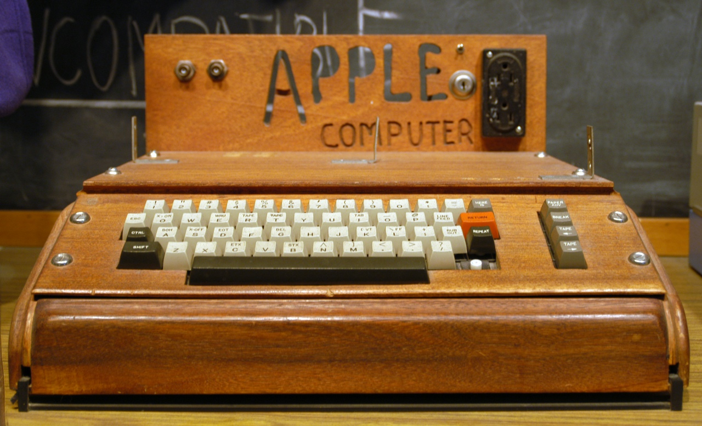
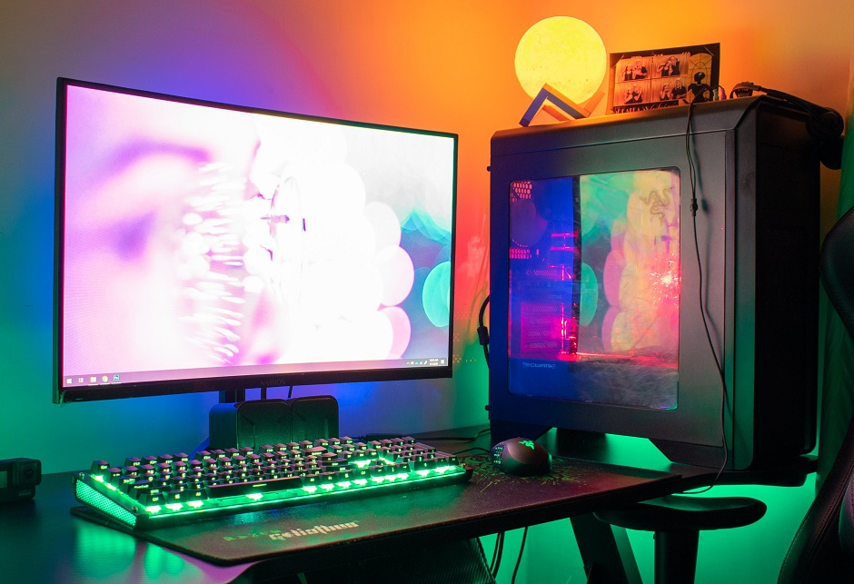
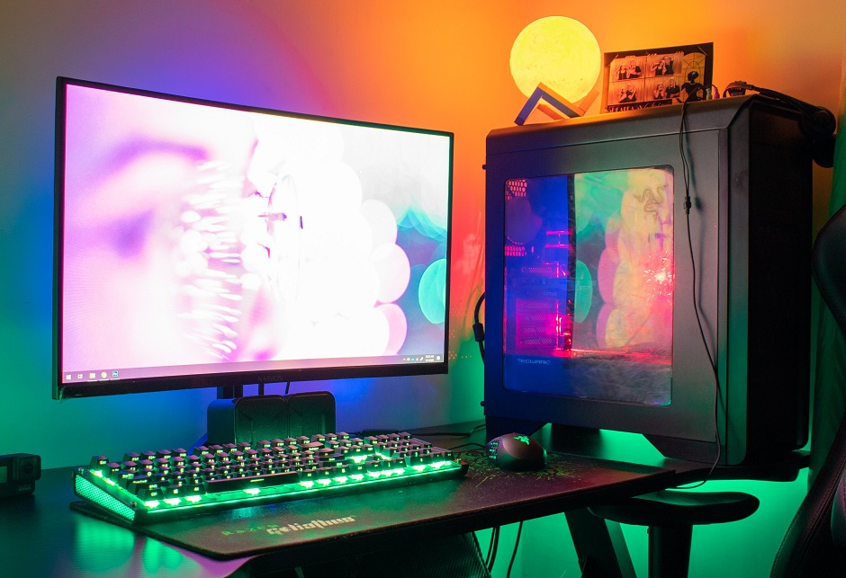

Komputer moją pasją - Historia komputerów |
|
Historia komputerówKomputery zaczęły swoją historię jako proste maszyny liczące. Od tego czasu ewoluowały do nowoczesnych superkomputerów. W tej sekcji prześledzimy tę fascynującą historię. Historia komputerów jest pełna innowacji i ciekawych postaci, takich jak Alan Turing, który przyczynił się do rozwoju współczesnej informatyki. |
Galeria 

|
|
© 2024 Oleksandr Hrypas. Wszelkie prawa zastrzeżone. |
|